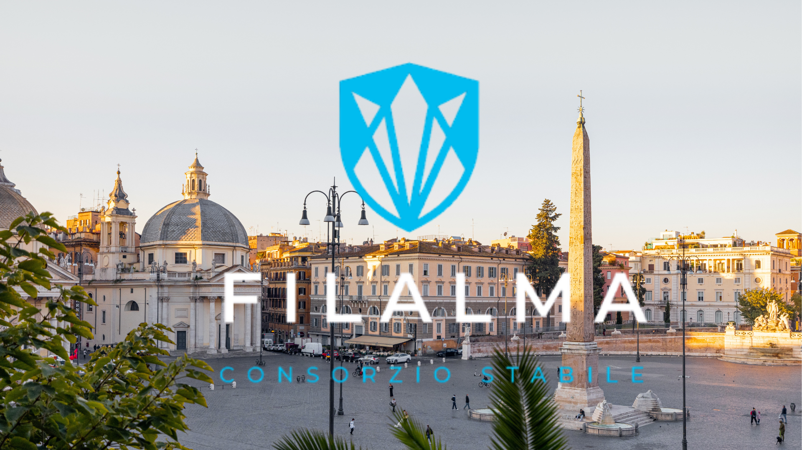

Global Services
Un unico consorzio, molte competenze
Facility management, pulizie,traslochi, manutenzioni e servizi integrati con regia unica.

Network operativo
Cresci nel network Filalma
Candidati per entrare nel consorzio e accedere a commesse strutturate e sinergie tra aziende.

Partnership
Cresciamo insieme
Un network operativo pensato per aziende che vogliono scalare su commesse strutturate.